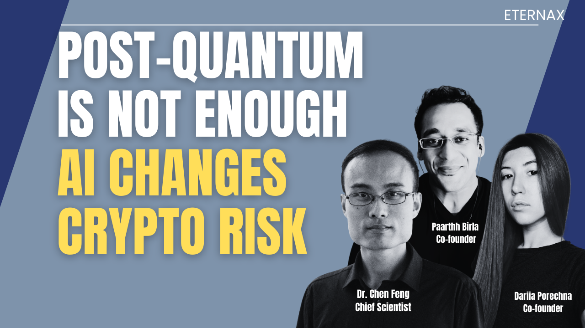

The Real Migration Is Bigger Than Quantum
March 2, 2026

The crypto industry is preparing for the wrong ending
Yes, quantum computing is a real threat to modern public-key cryptography. But the deeper risk is broader. The real risk is structured math plus a breakthrough. That is why the right question is no longer just, when does quantum arrive? It is: what survives the next cryptographic surprise?
This is no longer only a cryptography debate. It is a market-infrastructure decision for stablecoins, RWAs, exchanges, wallets, custody, and settlement systems.
Most of crypto still runs on a hardness bet
At the foundation layer, crypto still depends on systems whose safety comes from a computational assumption: we believe a certain mathematical problem stays hard.
NIST’s August 2024 release formalized the first real migration step. It finalized FIPS 204, ML-DSA, also known as Dilithium and FIPS 205, SLH-DSA, also known as SPHINCS+. It also said the forthcoming FALCON-based draft standard will be named FN-DSA.
That is the institutional signal.
Post-quantum is necessary. It is not an endpoint.
If the industry only replaces one hardness bet with another, the category problem remains. NIST itself frames SLH-DSA as a backup to ML-DSA in case ML-DSA proves vulnerable, which is a quiet but important acknowledgment that even the first post-quantum layer still needs backup plans.
Why AI changes the threat model
For years, cryptography benefited from a very human bottleneck. The search for better attacks moved at the speed of human mathematical reasoning.
That bottleneck is weakening.
Google DeepMind says FunSearch made the first discoveries in open problems in mathematical sciences using LLMs, and described it as the first time an LLM-based system made a new discovery on challenging open problems in science or mathematics. That does not prove AI can break elliptic curves or lattices today. It does mean the search frontier is moving.
That is why Justin Drake’s framing matters. In recent public discussion, he has pushed the idea that this is not only a move to post-quantum cryptography, but also to post-AI cryptography. The point is not that a break is imminent. The point is that AI changes the distribution of risk by accelerating the search for new attacks. A quantum break usually arrives through visible engineering progress. A classical algorithmic break can arrive through a paper.
One paper can compress a migration timeline overnight.
That is the part the market still underprices.
Why Dilithium and Falcon do not end the story
This is where the conversation needs precision.
ML-DSA, also known as Dilithium and the FALCON, or FN-DSA, track are important progress. They address the known quantum threat to classical signatures. But they do not end the story, because they still live inside the same broad category: computational cryptography built on mathematical structure.
NIST’s own descriptions make that explicit:
- ML-DSA is module-lattice-based
- FN-DSA is FFT over NTRU-lattice-based
That is the distinction the market keeps missing.
Post-quantum is not the same thing as post-assumption.
A post-quantum scheme can be the right answer to Shor’s algorithm and still remain part of the broader class of systems that depend on hard problems staying hard.
Hash-based is more conservative. It is still not final
The natural response is: fine, then use SPHINCS+.
There is logic in that. NIST explicitly says SLH-DSA uses a different mathematical approach than ML-DSA and is intended as a backup method in case ML-DSA proves vulnerable.
That is the right framing:
- More conservative? Yes.
- Assumption-free? No.
- Operationally cheap? Also no.
Cloudflare’s post-quantum signature analysis says the advantage of SLH-DSA is that, being solely hash-based, its security is better understood than ML-DSA. But the same analysis says it looks operationally worse than ML-DSA in TLS because of very large overhead.
So again, more conservative is not the same thing as final.
The byte-overhead story is the security story
This is the part most builders still underestimate.
Signature size is not an implementation detail. It is market infrastructure.
Cloudflare’s November 2024 analysis lays out the numbers plainly at the AES-128 level:
- ML-DSA-44 has a 1,312-byte public key and a 2,420-byte signature
- SLH-DSA adds roughly 39 kilobytes in the TLS setting Cloudflare modeled
- Falcon has better raw size characteristics, but secure fast signing is hard enough that Cloudflare says it becomes a poor fit for online signing in practice
The operational numbers are even more important:
- Cloudflare says it handles around 15 million TLS connections per second
- Upgrading each to ML-DSA would require about 1.8 terabits per second, roughly 0.6 percent of total network capacity
- Adding more than 10 kilobytes to certificate chains caused a steep increase in client and middlebox failures
- Adding less than 9 kilobytes still caused about a 15 percent TLS handshake slowdown
That is why Bas Westerbaan and Luke Valenta’s work matters so much. It makes one point unavoidable: The security story and the byte-overhead story are the same story.
If your migration path bloats every transaction, every handshake, or every verification flow, you may improve one risk while creating a new system bottleneck.
The cost curve is still moving against complacency
Even if you ignore AI entirely, complacency is still the wrong posture.
A February 2026 IACR ePrint, titled Reducing the Number of Qubits in Quantum Discrete Logarithms on Elliptic Curves, is part of a visible trend: serious research is still finding new space-time trade-offs in quantum cryptanalysis. The exact long-term hardware implications remain debated, but the strategic takeaway is simple: the research frontier is still moving in the direction defenders should care about.**The most dangerous assumption in crypto is that the cost curve is static.**It is not.
Why EternaX is targeting a stronger long-term end-state for this workflow
This is where EternaX should draw a hard line.
If the industry only migrates from ECC to another computational post-quantum signature scheme, it may solve the immediate quantum problem without solving the deeper category problem. It still remains inside the same basic model: a public signature system whose safety ultimately depends on a mathematical hardness assumption continuing to hold.
That is not the strongest end-state.
The stronger end-state is post-assumption market infrastructure, wherever the transaction workflow allows it.
That is the strategic case for the EternaX signing model.
EternaX is not arguing that mainstream post-quantum migration is unnecessary. It is necessary. The deeper claim is that migration should not stop at replacing one public hardness assumption with another if the transaction path allows a higher security class.
That is where EternaX is fundamentally different.
Based on EternaX’s stated architecture, the protocol’s novel post-quantum signing design is positioned as information-theoretic at the transaction-authentication layer. That is the key distinction. It is not presented as another lattice scheme. It is not presented as another hash-based public signature scheme. It is presented as a different security class for this specific workflow.
That changes the threat model.
In the EternaX comparison framework, the scheme is presented as remaining safe across all listed threat scenarios:
- Known classical algorithms
- AI-discovered classical breakthrough
- Quantum computer
- AI plus quantum combined
- Unbounded adversary
By contrast, the same framework shows:
- ECC is safe only against known classical algorithms, but breaks under AI-discovered classical breakthroughs, quantum attacks, combined AI-plus-quantum conditions, and unbounded-adversary scenarios
- Lattice PQC is safer than ECC, but still shown as at risk under AI-discovered classical breakthroughs, only believed safe against quantum, uncertain under combined AI-plus-quantum conditions, and ultimately breakable under an unbounded adversary
- Hash-based PQC is stronger than lattice systems across more threat scenarios, but still remains a computational system and therefore still breaks under an unbounded adversary
That is the category leap EternaX is trying to make.
The point is not merely to use a different post-quantum algorithm.
The point is to move the transaction-authentication layer out of the standard public-hardness model entirely, where the workflow makes that possible.
That matters not only because of security theory, but because of size, throughput, and market viability.
Your comparison table makes that explicit:
- ECDSA secp256k1: 64-byte signature, 33-byte public key, security basis: elliptic curve, not post-quantum safe
- EternaX novel PQ scheme: 160-byte signature, 64-byte public key, security basis: information-theoretic
- Dilithium: 2,420-byte signature, 1,312-byte public key, security basis: lattice
- Falcon-512: 666-byte signature, 897-byte public key, security basis: lattice
- SPHINCS+-128s: 7,856-byte signature, 32-byte public key, security basis: hash-based
These are not cosmetic differences. They are system-design differences.
The EternaX signature target, as shown in our materials, means:
- it is only 2.5 times the size of ECDSA
- but about 4.2 times smaller than Falcon-512
- about 15.1 times smaller than Dilithium
- and about 49.1 times smaller than SPHINCS+-128s
That is exactly why the EternaX design is strategically stronger for this specific workflow.
It is trying to solve three hard problems at the same time:
1. Move beyond standard public hardness assumptions Instead of merely swapping one structured mathematical assumption for another, EternaX is targeting a transaction-signing model whose stated security basis is information-theoretic for the transaction path.
2. Avoid the byte-overhead explosion Heavier post-quantum public signatures can turn a security upgrade into a throughput tax. EternaX’s stated 160-byte signature target is designed to avoid that outcome.
3. Preserve market-speed performance For stablecoins, RWAs, tokenized cash, and high-velocity on-chain markets, stronger authorization security cannot come at the cost of unusable latency, degraded liquidity, or rising execution friction.
That is why EternaX is not simply another post-quantum chain.
It is a post-assumption market-infrastructure thesis.
And this is the most important framing:
EternaX is not claiming superiority merely because it is newer or more novel. It is claiming to target a stronger long-term design direction because, if the construction holds under full public review, it offers a path to improve authorization security without remaining trapped inside the same standard public-hardness model and without accepting the same signature-size penalties that can slow real markets.
That is the meaningful claim.
The strongest credible public statement is:
EternaX is targeting a stronger long-term end-state for this workflow by combining an information-theoretic transaction-signing model with materially lower signature overhead than mainstream post-quantum alternatives of the construction.
Why this matters for stablecoins, RWAs, and market infrastructure
For stablecoin issuers, RWA platforms, exchanges, custodians, and on-chain market operators, this is not a niche cryptography debate.
It is a debate about authorization systems at scale.
Every stablecoin mint, burn, transfer, treasury rebalance, reserve movement, custody instruction, collateral transfer, liquidation path, and settlement workflow ultimately depends on signature trust.
If the signature layer is fragile, the asset stack is fragile.
That creates three layers of commercial risk:
1. Security risk If the signature model depends on assumptions that later weaken, the system inherits future migration pressure and future attack surface.
2. Performance risk If the migration path later adds meaningful byte overhead, verification cost, or latency, the asset can remain secure in theory while becoming slower and more expensive in practice. Cloudflare’s measured overhead is the clearest public proof that this is not hypothetical.
3. Coordination risk Migration is not a button. It is a multi-year infrastructure project. NIST’s guidance is explicit that organizations should start integrating now because full integration takes time.
For issuers, the danger is not just cryptographic obsolescence. It is being pushed into a migration that raises operational cost, slows settlement, complicates custody and compliance workflows, and risks liquidity fragmentation at exactly the wrong time.
This is why EternaX matters specifically for stablecoins and RWAs.
These assets do not just need to be more secure. They need to be:
- Quantum-aware
- AI-resilient
- Low-latency
- Operationally scalable
- Commercially viable at high transaction volume
- Designed to minimize repeat migrations
That is the real market requirement.
And it is why the EternaX positioning should be explicit:
Stablecoins and RWAs do not only need post-quantum cryptography. They need post-assumption market infrastructure that can preserve trust without sacrificing market speed.
The real question
The real question is no longer whether crypto will migrate.
It will.
The real question is:
What are we migrating to. And what does it cost the system?
Post-quantum cryptography protects you from the computer you expect. Post-assumption design is how you begin protecting against the breakthrough you do not.
That is the conversation the industry should be having now.
And that is the category EternaX is building for.
EternaX is a post-quantum blockchain for stablecoins, tokenized cash, RWAs, and high-velocity on-chain markets. EternaX combines post-quantum security, market-speed performance, and auditable privacy in one purpose-built blockchain for financial infrastructure. Built for post-quantum stablecoin issuance, post-quantum RWA settlement, and post-quantum tokenized cash rails, EternaX is designed to let issuers launch quantum-safe assets from day one without taking on future migration debt. In EternaX materials, the targeted signature size is 160 bytes and 120 milliseconds spendable finality, allowing EternaX to target fast settlement and high-throughput market activity without the heavy signature overhead that can slow other post-quantum systems. EternaX also enables auditable privacy with selective disclosure and verifiable controls, so stablecoin issuers, RWA platforms, exchanges, and custodians can support confidential flows where necessary and transparent reporting where required. The EternaX value proposition is simple: issue post-quantum-native stablecoins and RWAs, avoid perimeter migration and liquidity-fracture risk, and scale on blockchain infrastructure engineered for speed, security, continuity, and compliance-aware control. For more details, contact info@eternax.ai.